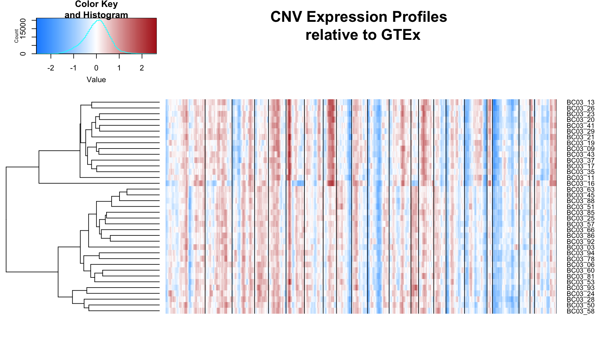

Using a window of 150 genes, the relative CNV profiles of single cells are computed and clustered.
source('inferCNV.R')
results03 = clusterCNVs('03')
bc03_cnv = results03[[1]]
cells03 = results03[[2]]
genes03 = results03[[3]]Next, we plot first and second principle component of the expression matrix.
Based on the CNV plot above, chromosome 8 and 17 are both amplified in the top cluster. Cells within this cluster also seperate in the PC analysis. Thus, these are the cancerous cells, while the other cells are healthy cells.
Using the tree generated by the CNV profiles above, we look at how well oncogenes/tumor suppressor genes agree with the ordering obtained by CNV clustering. The oncogenes ERBB2/ERBB3 are on chromosome 6, and MYC which is on chromosome 8. Both of these chromosomes are amplified for unhealthy cells. The heatmap below confirms that the expression of these oncogenes is also elevated.
We now turn to trees generated by SNVs for the same set of data. Given what we know about these cells, we can benchmark the results of the SNV analysis. In particular, we know that these cells are a mix of unhealthy and healthy, so at the very least, we expect the SNV tree to seperate these two populations, as the cancer cells contain mutations that the healthy ones do not.
We load the familiar data structure for single-cell mutation profiles.
source("readcounts_parser.R")
covmat <- gen.covmat('03')As a reminder: for each cell-mutation, we count the total number of reference and alternative alleles. Under the null model, the probability of observing n alternative alleles and N-n reference alleles is given by:
\[ P(A = n) = {{N}\choose{n}} p_{error}^{n} (1 - p_{error})^{(N-n)} \]
where \(p_{error} = 0.004\) is the estimated error rate. The error rate is define as the probability of observing a mutation by chance. We perform a binomial test to obtain the p-value of our observed alternative/reference counts under the null model. We choose a cut-off of 0.05. If a cell-mutation satisfies the cutoff, then a “1” is placed in the mutation matrix and 0 otherwise. Mutations with missing data are labeled as 3.
phylomat <- gen.mutmat(covmat)
head(phylomat[1:10,1:5]) BC03_03 BC03_06 BC03_09 BC03_11 BC03_13
EIF5 3 3 0 1 1
HUWE1 3 3 1 1 0
CAGE1 3 3 1 3 0
Unknown 1 1 3 1 1
TPR 3 0 0 0 1
HSPA6 3 3 0 3 3Using top 27 mutations (in terms of least missing data) on 33 cells, 66% of the entries in the mutation matrix are missing values. This is equivalent to effectively halfing the number of samples (cells) when using SCITE to reconstruct the mutation matrix.
The result from SCITE is shown below, where all the branch lengths have been set equal. The heatmap next to the tree shows 5 oncogenes and 4 tumor suppressor genes and its expression for each cell.
The sample above is not so interesting because there seems to be only one clone and a healthy subset. It would be interesting to run this analysis on data where multiple clones exist.
Based on the CNV profiles below, patient BC03 may have multiple clones.
source('inferCNV.R')
result02 = clusterCNVs('08')bc02_cnv = result02[[1]]
cells02 = result02[[2]]
genes02 = result02[[3]]In progress.